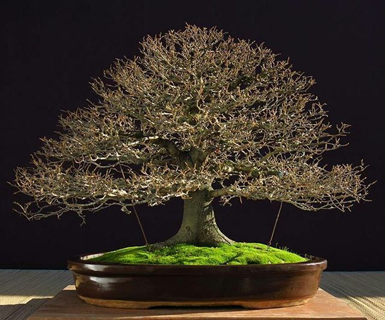
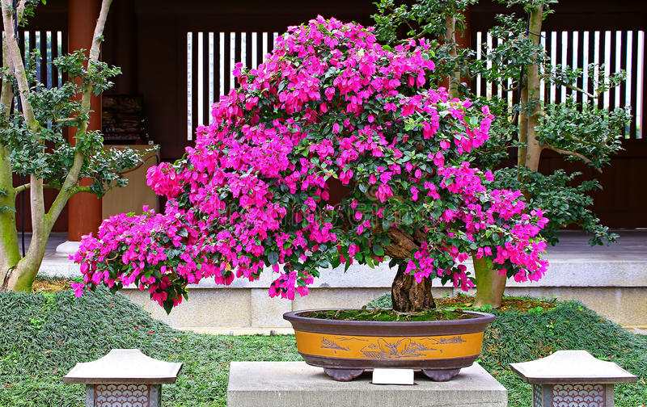

Not everyone enjoys leaving their Bonsai inside their house, and not everyone has
the space to do so. Not only this, some people tend to enjoy the view of a beautiful miniature
tree growing outside in the garden of their own homes. For this
reason, in this list, our team has compiled a list of the best Outdoor Bonsai which can be left
out in the sunlight the whole day. They usually survive even with little water and require a lot
of sunlight.
Privet
Privets are small trees or shrubs which can grow in most kinds of soil. It is often
used for making hedges, which can be a good thick-trunked Bonsai. It is a strong plant that takes
bonsai styling techniques (like trimming and bending with
wires) very well and is also a good choice for beginners with little experience.
The leaves are oval and opposite and the flowers are small and white. They
appear at the tips of new shoots in summer and are typically followed by small black fruit which is
moderately poisonous. The privet prefers
a place with direct sunlight for at least part of the day. Aphids, whiteflies, and weevils(a type of
beetle) can attack the plant, but this problem can be controlled with insecticides.
Japanese Maple
The Japanese Maple is native to Japan, Korea, and other southeast Asian countries.
These trees are very popular as ornamental shrubs. Maples are known and loved for their attractive
colors in different shades of yellow, orange, and red.
It is a shrub-like slender tree. The leaves are divided into five to eleven
pointed lobes, often with toothed edges. The newer leaves have a yellowish or orange to bright red
color. It has hand-shaped leaves with
five or more pointed lobes. The bark starts off green or reddish which turns light grey with age.
The reddish flowers tend to appear in clusters from May to June.
Hackberry

These trees are deciduous and have a grayish-colored bark. It can be kept indoors, but
most often it grows best when placed outside. It is ideal for bonsai art because its leaves and
internodes reduce well when trimmed, which is a key method
of bonsai keeping.
These trees grow in a thin twig-like structure. The fruits are edible and
bright orange, while the leaves are oval-shaped. It thrives when kept outdoors, but with proper care
and maintenance, it will also grow
indoors. They provide both fruits (between March and April) and flowers (between September and
October).
Japanese Winterberry
The Japanese Winterberry is an outdoor plant. Fall and winter are endorsed as the best
seasons for this bonsai as the light gray bark and bright red berries create an attractive sight.
They need a lot of sunlight for producing their fruit but should be protected
from intense heat and sun during the hottest summer days. The bright red berries, which emerge from
small pink flowers are its most
notable feature. Its small leaves turn yellow and then to varying shades of red and purple in
autumn.
Bougainvillea

Bougainvilleas are fast-growing and are well suited for most bonsai styles as they can
tolerate pruning and trimming very well. They also take well to wiring so it can be formed into
different shapes without much trouble.
Although they are not difficult to grow, it is best to make sure they are fully
exposed to the sun. It needs a lot of sunlight and high temperatures for producing flowers and so,
it should be placed outside in
a sunny place during the growing season. In autumn, the tree should be kept in a cool room with
sufficient light (or under grow lights). They produce bright colors of flowers, which are often
yellow, pink, and orange. It tends to be
pest resistant as long as is kept healthy and free from very wet soil or lack of sunlight.